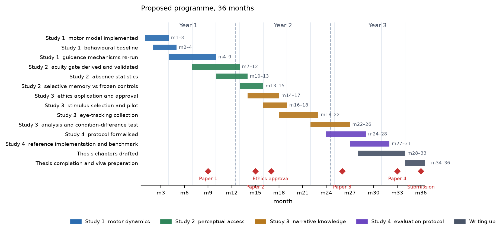

PhD research proposal. MRes Creative Computing, University of the Arts London. Element 2, 20%. Draft, 2026-09-09. Target 2,700 words.
Citation status. References here are verified against primary sources except where the table at the end says otherwise.
The MRes project built JOY, a closed-loop artificial viewer that receives only a foveated percept, combines bottom-up saliency, semantic guidance from a vision-language model, oculomotor history and a centre bias under explicit weights, selects its own fixation, advances its own clock, and then perceives the consequence of its own choice. Across seven experiments it established one result more clearly than any other: improving the prediction of where people look does not improve the behaviour of something that looks.
A low-capacity state-dependent arbitration policy improved frame-level prediction by 0.0094 bits, reliably, in five of five folds. The same policy, put in charge of the loop, had a median disadvantage of 0.919 bits against fixed weights and won on three of eight held-out clips. Every semantic and narrative mechanism tested contributed between 0.003 and 0.021 bits. Meanwhile the viewer's fixations lasted 214 to 220 ms against an audience's 179, its saccades spanned 2.4 to 4.7 degrees against 1.44, and it returned to a recently fixated location 4 to 24% of the time against 46%.
That pattern points somewhere specific. The MRes spent its effort on what the viewer knows, and the evidence says the binding constraints are how it perceives and when it moves. This proposal takes those constraints as the subject rather than the background, and adds the one question the MRes could formulate but not test: whether what a viewer knows about a story changes where they look, and whether an artificial observer can reproduce that without being given information no viewer had.
Three literatures meet here and none of them answers the question alone.
Gaze modelling evaluates predictors. The dominant protocol scores a model against recorded human fixations, and the most careful scanpath comparison evaluates each fixation given the human's preceding scanpath (Kümmerer and Bethge, 2021). At every step the model is returned to the human trajectory, so the protocol cannot detect a mechanism that improves prediction while degrading autonomy. The MRes demonstrated that such mechanisms exist.
Oculomotor behaviour is the largest structure in the data and is modelled separately. The central bias survives control of motor bias and image features (Tatler, 2007); gaze in dynamic scenes clusters on motion (Mital et al., 2011); and fixation duration has its own timing mechanism, not reducible to target selection (Nuthmann et al., 2010). Attention models routinely adopt the first two as baselines and leave the third outside the loop, which is precisely where the MRes found its largest behavioural gap.
Narrative comprehension is separated from selection. The Scene Perception and Event Comprehension Theory distinguishes front-end processes within a fixation from back-end event models built across fixations (Loschky et al., 2020). Its claim is that comprehension does not name a location; it changes expectation. This is testable and largely untested computationally. The strongest experimental handle on it is dramatic irony, where the viewer is given information a character lacks, and viewers have been shown to construct and maintain false-belief representations of characters during such scenes, using a purpose-built film corpus and eye-tracking (Cabañas, Senju and Smith, 2023).
Semantic guidance is contested, and the contest is methodological. Henderson and Hayes (2017) introduced meaning maps and reported that with meaning and salience decorrelated only meaning explained unique variance in attention. Pedziwiatr et al. (2021a) then reported that meaning maps and deep saliency models alike are insensitive to image meaning when predicting fixations, and an unresolved exchange followed in the same journal. The exchange establishes something the MRes inherited directly: a map that looks semantic and improves prediction may be operating through high-level image structure rather than through meaning. The MRes semantic channel, derived from a vision-language model's grounded region, is exposed to the same ambiguity, and the substitution test that would resolve it, replacing the semantic map with a high-level saliency model and refitting, was scoped but not run. It is a natural early component of this programme.
Perceptual constraint is mature as a rendering technique and immature as a modelling one. Foveated imaging has modelled the falloff of acuity with eccentricity for decades (Geisler and Perry, 1998), and is standard in compression and graphics. Inside an attention model it is far less common, and the MRes result suggests why the distinction matters: applying foveation to the image is not the same as constraining the evidence a model extracts from it. When a vision-language model is queried on a full frame it is an omniscient observer of the scene, and recent work reading gaze from such models by predicting coordinates as vocabulary tokens (Agrawal, Bethge and Kümmerer, 2026) does not address this, because the constraint question is orthogonal to how the model's output is decoded.
What the three literatures do not supply. Each provides a component and an evaluation appropriate to that component in isolation. Saliency and meaning are evaluated on aggregated fixation density; scanpath models on sequences conditioned on human history; motor models on distributions of duration and amplitude, usually decoupled from where the eye goes; narrative comprehension on behavioural and neural measures rather than on gaze generation. A system that must do all of these at once, and must survive the consequences of its own choices, falls between the evaluations. The MRes demonstrated concretely that this is not a bookkeeping problem: a mechanism can be reliably positive under one of these evaluations and negative under another, in the same data.
The gap is therefore the interaction. No existing programme constrains perception, motor timing and narrative knowledge in one system and evaluates it as an observer rather than as a predictor.
RQ1. Does an artificial observer with an explicit oculomotor timing and amplitude model produce human-like viewing behaviour, and does adding it change which guidance mechanisms help?
This follows directly from the MRes finding that the behavioural gap is in timing, amplitude and persistence, and from the possibility that guidance mechanisms were being evaluated inside a motor regime too unlike a human's for their contribution to be visible.
RQ2. What changes when perceptual access is genuinely gaze-contingent rather than nominally foveated?
The MRes found that its own perceptual constraint barely bit. Across 7,697 held-out examples a saliency map computed on the foveated percept correlated at 0.998 with the same map on the full frame, the semantic model's box overlapped its full-frame counterpart at 0.90, and an object detector found 106% of the objects it found on the full frame. The constraint was applied to the image and not to the evidence extracted from it.
RQ3. Does a viewer's narrative knowledge measurably alter gaze, and can an artificial observer reproduce that effect without omniscient access to the scene?
The MRes built the machinery for epistemic state and could not test it, because neither corpus contained dramatic irony and because inferring what a character knows from a detector is not possible. A corpus purpose-built for exactly this now exists.
RQ4. What evaluation protocol distinguishes a good gaze predictor from a good artificial observer?
A methodological question the MRes ran into three times, each time in the form of a protocol choice that inflated the apparent success of the more flexible model.
Four studies, each yielding a publishable result whether its hypothesis holds or fails.
Replace the current arrangement, in which a fixation is sampled from a density and a duration is drawn independently, with a coupled model: saccade amplitude and direction drawn from a distribution conditioned on the current state, a duration model in the CRISP family whose rate is modulated by the difficulty of the current percept, and an explicit inhibition-of-return term that produces the return behaviour humans show and the current viewer does not.
Evaluation. Primary outcomes are behavioural and distributional, not likelihood: fixation duration distribution, saccade amplitude distribution, return rate within one degree, dispersion, and the joint distribution of amplitude with duration. Comparison against the audience on the same clips and window, with distributional distances rather than means alone. Likelihood is reported as a secondary outcome, and specifically to test whether it moves in the same direction as behavioural similarity, which the MRes suggests it may not.
The critical re-test. Every guidance mechanism from the MRes is re-run inside the improved motor regime. If semantic and narrative contributions grow once the motor model is human-like, that is a strong and surprising result. If they do not, the MRes conclusion is confirmed under the condition that most threatened it.
Constrain not the image but the evidence. Each candidate detection or region is admitted with a probability derived from the acuity available at its location under the foveation model, so peripheral content is genuinely uncertain rather than merely blurred. The gate's form is derived from the existing per-pixel resolution field rather than chosen, and its steepness is treated as an experimental parameter with a sensitivity analysis.
Evaluation. First, that the gate creates the absences it should: detection rate as a function of eccentricity, and the frequency of objects that disappear and return. Second, whether an observer with genuinely limited access behaves more like a human, particularly in revisits, which is the dimension where memory and limited access should show. Third, whether a selective memory over gated entities now earns its place, tested against the five frozen controls established in the MRes, where the naive version was refuted.
The design contrasts conditions that share a downstream scene and differ only in what the viewer knows entering it. The cleanest comparison, and the one this study runs, is: viewer knows, character does not against neither knows. Character knowledge is an annotation about the film; viewer knowledge is manipulated experimentally by what precedes the scene.
Materials. The existing dramatic irony film corpus (Cabañas, Senju and Smith, 2023), selected for false-belief-inducing situations, which removes the largest feasibility risk: the stimuli exist and have been validated for exactly this contrast.
Human study. Eye-tracking of viewers under both conditions on matched downstream scenes. Primary outcomes are dwell time on the critical object, time to first fixation, revisit count and anticipatory gaze toward locations relevant to the character's false belief. Location is a secondary outcome, because the MRes found location effects to be the least sensitive measure.
Computational study. The artificial observer is given the same manipulation as a knowledge state entering arbitration only, never naming a location. The test is whether the difference between its two conditions resembles the difference between the human conditions. This is a much stronger test than fitting gaze in a single condition, because a model can fit gaze without representing knowledge at all, but it cannot reproduce a knowledge-induced difference without it.
Why the difference is the right outcome. The MRes repeatedly found small effects that were statistically resolved and behaviourally negligible, and a single-condition fit is exactly the design that produces them. A condition difference is a within-material contrast: the scene, its saliency, its motion and its semantic content are held constant, and only what the viewer knows changes. Any effect that survives is therefore attributable to knowledge rather than to image structure, which is the confound the meaning-map debate shows to be hardest to exclude. The decision rule is fixed before analysis: the model is credited with representing viewer knowledge only if the sign and rough magnitude of its condition difference match the human one on the primary outcomes, with intervals bootstrapped over participants and over items separately.
Feasibility risks and their mitigations. The largest is that the corpus's existing eye-tracking does not cover the required contrast, in which case new collection is needed and the ethics timeline becomes critical, which is why approval is sought in month 14 rather than later. The second is effect size: if narrative knowledge moves gaze only slightly, a study powered for a plausible effect may still be underpowered for the true one. A pilot in months 16 to 17 sizes the main collection rather than assuming it, and the pilot's own result is reportable either way.
Formalise and release what the MRes learned the hard way. The protocol distinguishes prediction on the human trajectory from generation on the model's own; requires paired comparison with agreement across the grouping unit as well as a pooled interval; requires model selection on an inner development split; requires behavioural distributional outcomes alongside likelihood; and requires the baseline to be stated, since bits above uniform and information gain above a centre bias are not the same scale.
Deliverable. A reference implementation and a small benchmark, with the MRes models as worked examples of each failure mode, including the case where selecting the epoch on the evaluation set moved the same comparison from −0.094 to +0.103, nearly two tenths of a bit, which is further than the effect being measured.
Human participants. Study 3 involves new eye-tracking. It requires ethical approval before any recruitment, informed consent covering the deception inherent in a knowledge manipulation, and debriefing that discloses it. Participants may withdraw and have their data destroyed. Eye-tracking data is personal data: it is pseudonymised at collection, stored separately from consent records, and never published in a form permitting re-identification. No clinical or diagnostic inference is drawn.
Film material. The corpora are copyright. Use is limited to research under the applicable exception, no substantial excerpt is redistributed, and figures reproduce only what is necessary to illustrate a method.
Reuse of existing data. Studies 1, 2 and 4 use established public eye-tracking corpora within their terms. Where an existing corpus is reused, its original consent scope is checked to cover secondary analysis.
Model provenance. The semantic channel is a pretrained third-party model whose training composition is undocumented, so any claim about what it finds semantically important is bounded by that, and the proposal treats it as an instrument with unknown bias rather than as a model of human semantics. Where a claim depends on that bias, it is tested by substituting a different model.
Research integrity. The protocol in Study 4 is applied to this project's own work. Negative results are reported. Pre-registration of the decision rule precedes each study's analysis, as it did in the MRes.

Figure 1. The proposed programme over 36 months. Studies overlap deliberately: Study 2 begins while Study 1's re-test is running, and Study 3's ethics application is submitted in month 14 because approval is the critical path item, not the data collection it gates.
The same schedule as a table, for reference:
| months | study | milestone |
|---|---|---|
| 1–3 | 1 | motor model implemented; behavioural baseline against audience established |
| 4–9 | 1 | guidance mechanisms re-run inside the motor regime; first paper submitted |
| 7–12 | 2 | acuity gate derived and validated; absence statistics measured |
| 13–15 | 2 | selective memory tested against frozen controls; second paper |
| 14–17 | 3 | ethics approval; stimulus selection and piloting |
| 18–22 | 3 | eye-tracking data collection and analysis |
| 23–26 | 3 | computational condition-difference test; third paper |
| 24–30 | 4 | protocol formalised, reference implementation, benchmark assembled |
| 27–33 | 4 | fourth paper; thesis chapters drafted |
| 34–36 | — | thesis completion and viva preparation |
Studies overlap deliberately. Study 2 begins while Study 1's re-test runs, and Study 3's ethics application is submitted early because approval is the critical path item.
The proposal's spine is the MRes finding that prediction and observation come apart, and each study extends it in a different direction.
If Study 1 succeeds, the contribution is an artificial observer whose behaviour, not only its likelihood, resembles a human's, and a demonstration that the motor regime was gating the apparent value of guidance mechanisms. If it fails, the contribution is a sharper localisation of the remaining gap, since the most plausible explanation of the MRes result would have been eliminated.
Study 2 either shows that genuinely limited access changes an observer's behaviour, which would make limited access a design requirement rather than a plausibility feature, or shows that the systems are robust to it, which is itself a caution about how much foveation buys.
Study 3 is the highest-risk and highest-value component. A reproduced knowledge-induced difference in gaze would be, as far as the MRes review could establish, the first demonstration that a computational observer represents a viewer's narrative knowledge in a way that changes where it looks. A null result would still contribute a well-powered measurement of how much narrative knowledge moves gaze in humans, on a corpus built for the purpose.
Study 4 addresses a problem the MRes encountered three times, each time in the direction that favoured the hypothesis under test. That it happened three times in one project, to a researcher actively looking for it, is the argument for a protocol rather than for vigilance.
Taken together, the programme moves the question from "can a model predict human gaze" to "what must a system have in order to watch like a person", and it treats each candidate answer as something to be measured rather than assumed.
| reference | verified | used for |
|---|---|---|
| Kümmerer, M. and Bethge, M. (2021) State-of-the-art in human scanpath prediction. arXiv:2102.12239 | yes | that scanpath models predict each fixation given the human's preceding scanpath |
| Tatler, B. W. (2007) The central fixation bias in scene viewing. Journal of Vision 7(14) | yes | that the central bias survives control of motor bias and image features |
| Mital, P. K., Smith, T. J., Hill, R. L. and Henderson, J. M. (2011) Clustering of gaze during dynamic scene viewing is predicted by motion. Cognitive Computation 3(1), 5–24 | yes | attentional synchrony in dynamic scenes |
| Nuthmann, A., Smith, T. J., Engbert, R. and Henderson, J. M. (2010) CRISP: a computational model of fixation durations in scene viewing. Psychological Review 117(2), 382–405 | yes | that fixation duration has its own timing mechanism |
| Loschky, L. C., Larson, A. M., Smith, T. J. and Magliano, J. P. (2020) The Scene Perception and Event Comprehension Theory (SPECT) applied to visual narratives. Topics in Cognitive Science 12(1) | yes | the front-end and back-end separation |
| Cabañas, C., Senju, A. and Smith, T. J. (2023) The audience who knew too much: investigating the role of spontaneous theory of mind on the processing of dramatic irony scenes in film. Frontiers in Psychology 14, 1183660 | yes | that a dramatic irony film corpus exists, selected for false-belief-inducing situations, and that viewers construct and maintain false-belief representations during such scenes |
| Henderson, J. M. and Hayes, T. R. (2017) Meaning-based guidance of attention in scenes as revealed by meaning maps. Nature Human Behaviour 1, 743–747 | yes | that with meaning and salience decorrelated, only meaning explained unique variance |
| Pedziwiatr, M. A., Kümmerer, M., Wallis, T. S. A., Bethge, M. and Teufel, C. (2021a) Meaning maps and saliency models based on deep convolutional neural networks are insensitive to image meaning when predicting human fixations. Cognition, 206, 104465 | yes | that meaning maps do not outperform a semantically neutral high-level saliency model. The later reply (2021b, Cognition 214, 104741) is a separate item and does not carry this result |
| Geisler, W. S. and Perry, J. S. (1998) A real-time foveated multiresolution system for low-bandwidth video communication. SPIE 3299 | yes | the acuity falloff with eccentricity used by the gate in Study 2 |
| Agrawal, S., Bethge, M. and Kümmerer, M. (2026) DeepGaze3.5-VL: modeling scanpaths via autoregressive token prediction. arXiv:2607.02083 | yes | that vision-language models are used for gaze by decoding coordinates as tokens, a route orthogonal to the access constraint |
Still to verify before submission: the precise availability and licensing terms of the dramatic irony corpus for reuse; whether its existing eye-tracking data covers the specific condition contrast Study 3 requires or whether new collection is needed; and the inhibition-of-return literature that Study 1's return term will be built on.